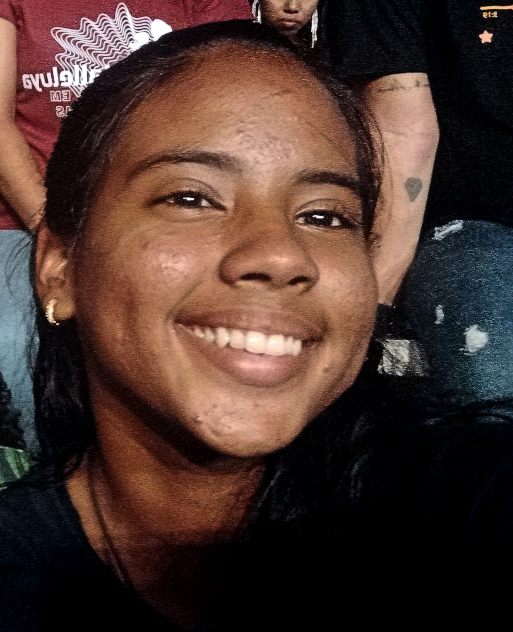
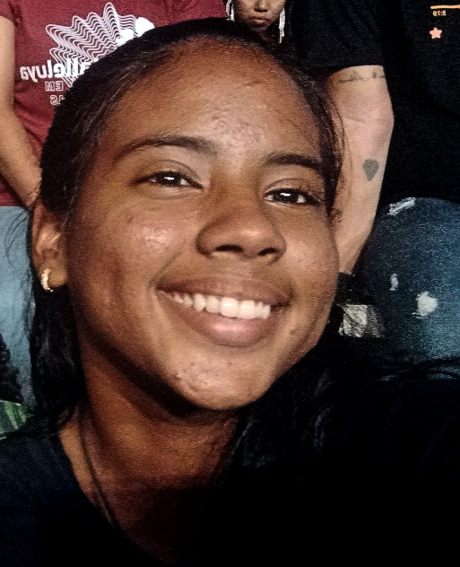

Sobre mim...
 

Meu nome é Vitória Freire Silva, moro em Ceará-Mirm com
meu pai Gilberto Freire, minha mãe Jeane Melo e meus irmãos
Helena e Davi Freire.
Gosto muito de passear e viajar; gosto de passar tempo com minha família
e participar de eventos católicos como os retiros da RCC ou o Halleluya.
Meus hobbis favoritos são: Ler livros; assistir séries ou filmes e fazer doces. Sonho em viajar para Itália, Turquia,
Córeia do Sul, Espanha e Portugal.
Curiosidades:
- Sou Consagrada a Jesus pelas mãos de Maria
- Minha matéria preferida é química
- Faço parte da RCC (Renovação Carismática Católica)
- Gosto de séries criminais
- Faço parte da equipe de Robotica do Campus
Educação:
| Ano de formação | Nome da Escola |
|---|---|
| Educação Infantil | SECAT/SELM |
| 1º ano | |
| 2º ano | |
| 3º ano | |
| 4º ano | |
| 5º ano | |
| 6º ano | |
| 7º ano | |
| 8º ano | |
| 9º ano | |
| Ensino Médio | IFRN-Campus Ceará-Mirim |
Causos:
Em janeiro de 2022, minha família, junto com mais três outras famílias, decidiu sair da praia onde estávamos passando as férias e explorar
outras praias pela orla, usando duas caminhonetes. As crianças e adolescentes (com idades variando de 4 a 18 anos) foram nas caçambas das
caminhonetes, totalizando doze jovens. Como não estávamos indo pela BR, não vimos problema.
Depois de passarmos por três praias, decidimos voltar pela BR, pois seria mais rápido. Porém, ninguém esperava uma blitz naquele dia.
Nossa sorte foi que um motociclista percebeu nossa situação irregular e alertou os motoristas. Com essa informação, eles, decidiram tirar todos
os jovens (incluindo os de 4 anos) da caçamba e mandá-los a pé até um ponto combinado, depois de uma lagoa que disseram existir por ali (mas que não vimos).
Após uns cinco minutos de caminhada, começamos a ficar ansiosos, com medo de termos nos perdido, mas ao mesmo tempo estávamos gostando da aventura.
Logo avistamos um dos adultos vindo em nossa direção. Com a ajuda dele, conseguimos chegar em segurança até o carro e voltar para a casa de
praia onde estávamos. No fim, todos comentaram sobre o ocorrido e sobre quem tinha ficado com medo de se perder ou de ser sequestrado.
Habilidades:
- Nadar:
- Matemática:
- Conversar:
- Fazer Doces:
- Designer de Slides
Sou muito boa nadando, realizo percursos em um curto périodo de tempo.
Tenho uma certa facilidade para entender, interpretar e resolver problemas matemáticos.
Consigo iniciar uma conversa de forma eficaz e envolvente com pessoas que não conheço ou que não sou tão próxima.
Sempre que cozinho algum doce fica muito delicioso, mas se for salgada nem sempre dá certo.
Faço slides muito bonitos.